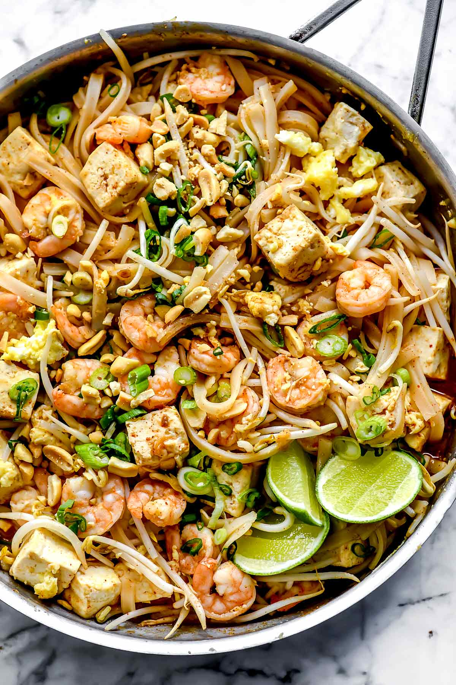

I.Pad Thai

Description
Pad-Thai is a stir-fry dish best made wih rice noodles.It is commonly served as street food in Thailand.
Pad-thai is typically made with rice noodles,shrimp,peanut,among other ingredients.The dish is usually
fried in a wok or a deep frying pan.The dish has gained popularity as it's easy to prepare and the
ingredients are inexpensive.
That said, Let's get right into it!
ingredients
(serves 4)
- 8 oz thick rice noodles
- 2 tbsp vegetable oil
- 2 garlic cloves,chopped
- 2 fresh red chiles,seeded and chopped
- 6 oz pork tenderloin,thinly sliced
- 4 oz shrimp,shelled,deveined and chopped
- 8 fresh Chinese chives,snipped
- 2 tbsp Thai fish sauce
- Juice of 1 lime
- 2tbsp jaggery or light brown sugar
- 2 eggs,beaten
- 3 oz fresh bean sprouts
- 4tbsp fresh cilantro,chopped plus extra springs to garnish
- 3/4 cup chopped unsalted peanuts
steps
- Prepare the noodles according to the package directions.Drain well and set aside.
- Heat a wok over medium-high heat,then add the oil.
- Stir-fry the garlic,chiles, and pork for 2-3 minutes.
- Add the shrimp and stir-fry for an additional 2-3 minutes.
- Add the chives and noodles, then cover and cook for 1-2 minutes.
- Add the fish sauce,lime juice,sugar and eggs.
- Cook, stirring and tossing constantly to mix in the eggs.
- Stir in the bean sprouts,cilantro and peanuts and mix well,then transfer to serving dishes.
- Scatter over some extra peanuts and serve immediately, garnished with coriander springs.